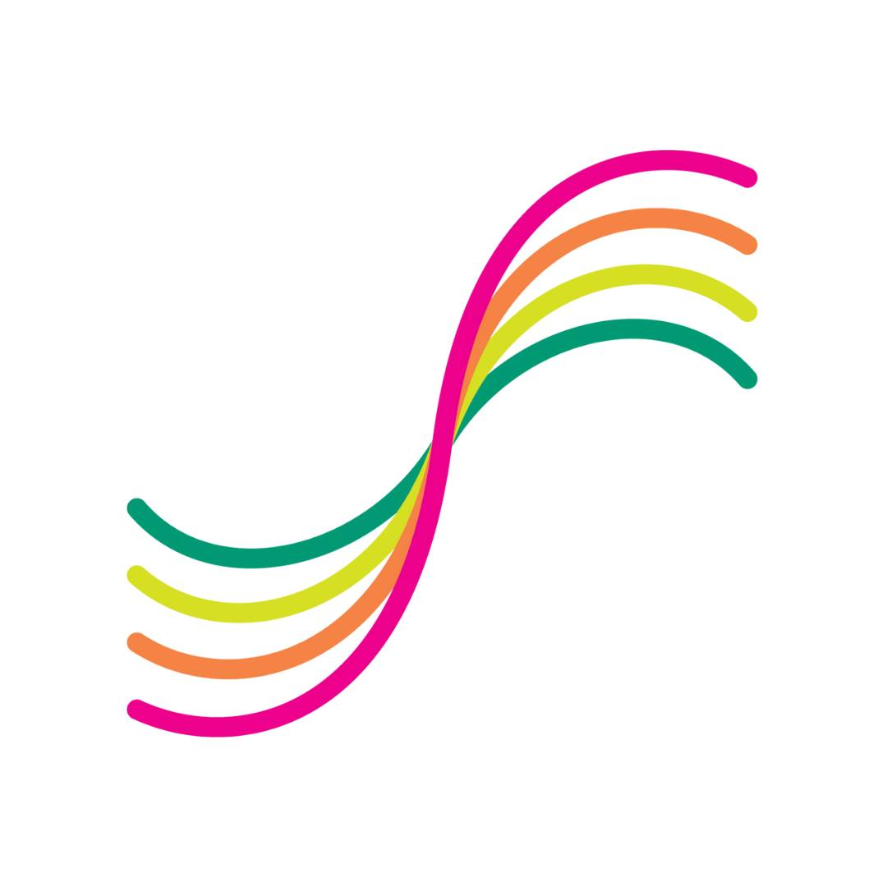

Games Programming Society (Founder/Chair)
Teesside University 2023-2026
View The Website
Via The WayBack-Machine
I am the Founder of Teesside University's Games Programming Society.
The Games Programming Society is an academic society focued on bringing programmers together to share ideas, cooperative in projects, provide feedback, and study together. It is the smaller sister society to the Games Creation and Games Art societieis. I created it as a means to give Programmers and Technically-Minded Developers a society to call their own. Whilst Chairing my society I got to recruit and work with Dominic Taylor, Alfie Simpson, and Nicole Double as my vice chairs and associate staff members.
Mission Statement
"Our mission is to provide a dedicated space for academic practice in programming, where students can engage in coursework, study programming at various levels—from beginner to advanced—and potentially teach programming. Our club boasts a diverse membership from a range of disciplines and coding backgrounds. Whether you are just starting out or are an experienced programmer, you will find a welcoming environment here. We aim to create a collaborative space that fosters learning and skill development in programming. We look forward to supporting your growth and passion in this field."- Games Programming Society 2026
The biggest achievement of my Society would be it's involvement in the C.A.P Jam (2024 & 2025). A collective game between the three Games Societies that I helped host in the latter 2 years I was Chair.
I was the chair of this society since it's inception to my graduation


Course Representative (Year 1)
Teesside University 2023
View The Website
During my first-year at university I was elected as course representative, in this role I listened to the feedback of my peers (both first and later years). I would report my findings and recommend small changes to address them. In this role I was trained on a variety of survey / data collection, and pattern recognition techniques which I later adopted into my debugging skillset.
Union Statement
About The Union"A Course Rep is a student on your course elected by their peers to make changes on behalf of students. They listen to your positive comments and concerns, gather your feedback relating to your academic experience, and represent your views in important discussions with academic staff."- Teesside University Student's Union 2026
I fufilled this role from September 2023 to June 2024
CPA Care Website (Co-Developer)
Caring Personal Assistants 2023
View The Website
Via The WayBack-Machine
At the tail-end of my final-year of college I took on the challenge of co-developing Caring Personal Assistants. ltd's © at the time upcoming website. First, me and my co-developers (Billy Watson and Shaun Eglintine) were each individually tasked with designing, developing, and pitching a layout to be chosen as the base for the 'site. Once said base was chosen I was then tasked with migrating my chosen elements into the code-base. In the final version I was responsible for the Dark Mode Settings, and Interactable Elements.
CPA Mission Statement
"Our Mission is to deliver custom solutions, personal assistance and tailor care packages which allows the service user to live a full life, and achieve as much independence as possible "- Caring Personal Assistants. ltd. © 2023
I finished my contributions to this website in June 2023
This project was finished and attributed under the hold of Taylor-Made Software Solutions


Via The WayBack-Machine
Via GitShare (Private in Respects to CPACare)


Class Representative (Foundation)
South Tyneside College 2022 - 2023
View The Website
Whilst studying a supplimental third year at college to accomdate my role as a Teaching Assistant I took it upon myself to additionally volunteer as the class / student representative for the first-year computer Science students. This would later inspire me to both take a position as course representative (Listed Above) as well as return the following academic year to host the STC Game Jam 2023.
In this position I gathered students feedback and attended big meetings with my representative peers and the college management staff (including the Dean). In these meetings I voiced the concerns of the students and gathered all the relevant recepient information which I later guided my classmates with.
Student Handbook
About The Student Representatives" Student Representatives will attend Student Forums to give feedback and make suggestions on behalf of the student group. " " We ensure there is a representative for each course who is able to speak on behalf of the group about a range of topics. " - South Tyneside College 2024
I fufilled this role alongside my position as a Programming Teacher Assistant from September 2022 - June 2023

Cost Of Living Crisis (Winner)
Sunderland Software City 2022
View The Website
In November of 2022 Sunderland Software City held a Hackathon on Digital Solutions to the Cost Of Living Crisis in which teams would compete to find a solution to one of three main areas of concern:
- Energy/Fuel Increases
- Housing Costs
- Food Price Increases
For this event I devised and designed a G.D.D for a potential movile game called House-Panic. The point of the game being to teach and reward children for good cost-effecient house keeping measures. My team was the very first to present and the staff were thoroughly impressed with the concept and how much it'd been developed. We went on to win the event.
What is it Statement
About The Cost Of Living Challenge" Design challenge, innovation challenge, hackathon – whatever you want to call it, this challenge is a great vehicle for collaborative working, cross-sector thinking, and has the potential to impact big issues with innovative solutions. On 18 November 2022, Tech Startup Sunderland will be holding a challenge to tackle the cost of living crisis. We’ve all watched as prices have skyrocketed and communities have been hit harder and harder by the economic shift. We believe tech can play a role in supporting those being impacted the most. " - Sunderland Software City 2022